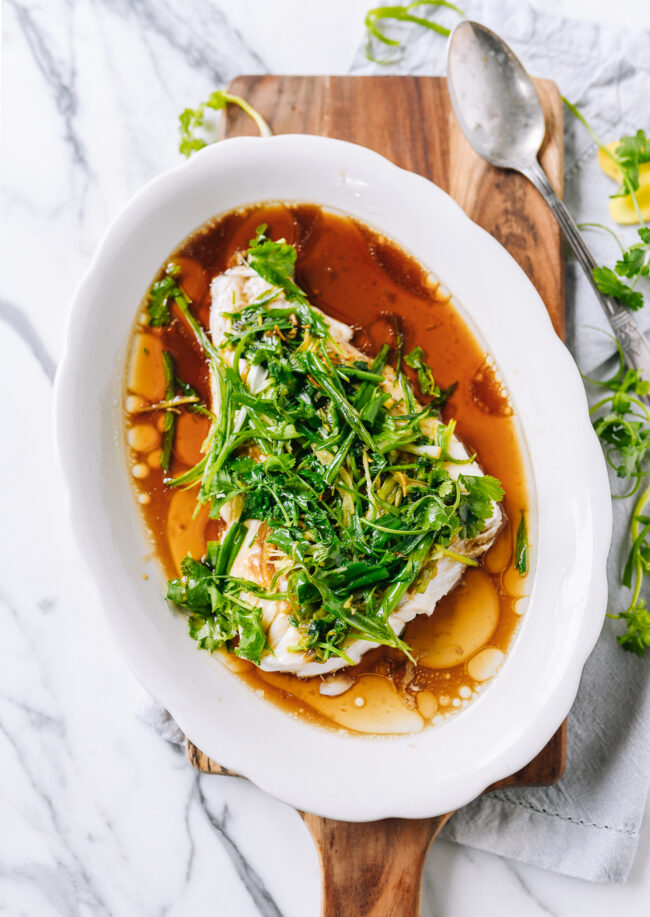

Steamed Fish

Description
Cantonese steamed fish is a traditional, simple dish often served as one
of the final courses in a Chinese wedding banquet (right before the last
rice and noodle course).
Ingredients
- Flounder
- Olive Oil
- Coriander
- Ginger
- Salt
Steps
- Cut the fish in half lengthwise and chop the coriander
- Bring water to a boil
- Rinse the fish and place in the pan
- Cover and steam for 6-7 minutes
- Place the oil, ginger, and coriander on top
- Remove from pan and serve hot